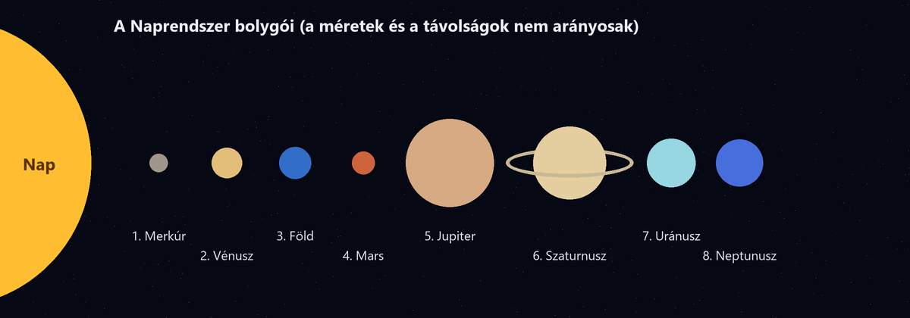
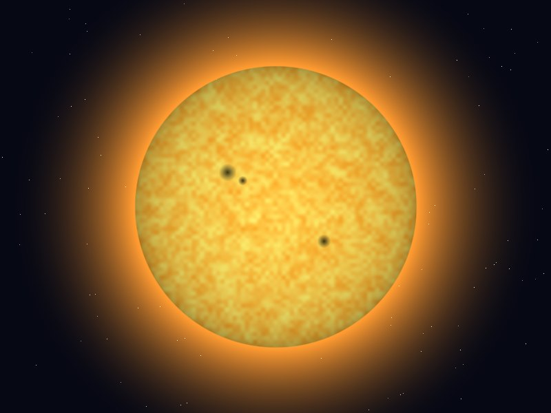
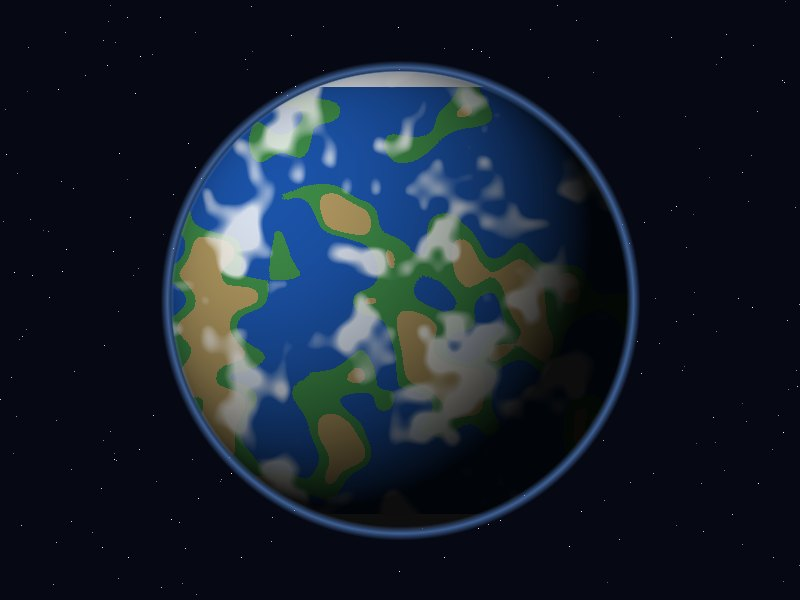
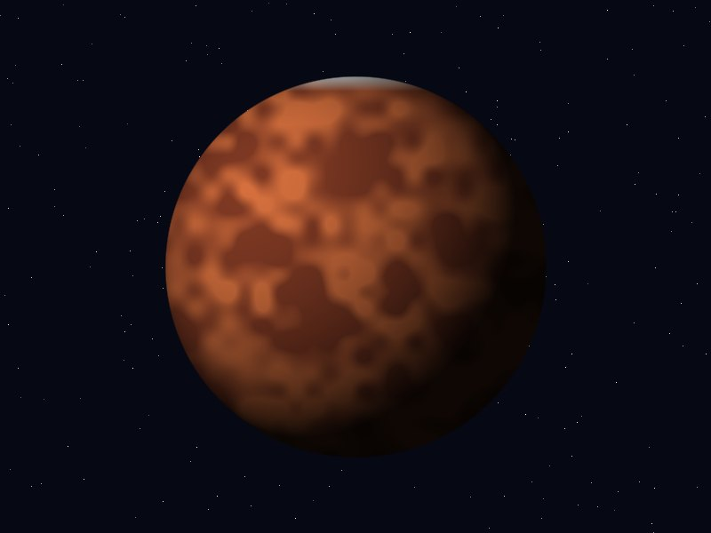
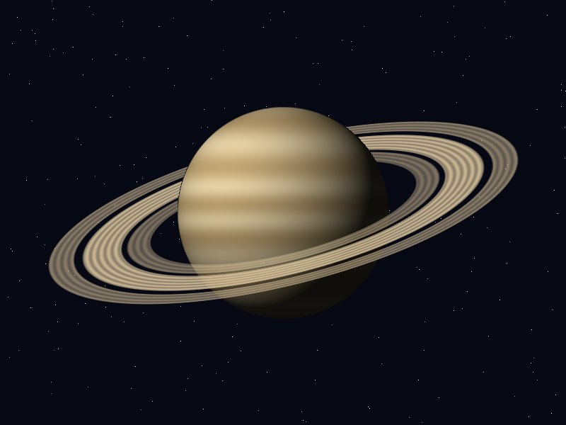

Utazás a Naptól a Neptunuszig

A Naprendszer a Napból és a körülötte keringő égitestekből áll: nyolc bolygóból, a holdjaikból, törpebolygókból, kisbolygókból és üstökösökből. Mintegy 4,6 milliárd évvel ezelőtt keletkezett egy hatalmas gáz- és porfelhőből.
Ezen az oldalon végigjárjuk a Naprendszert: megismerjük a Napot, sorba vesszük a bolygókat, közelebbről megnézünk három égitestet, tisztázunk néhány fogalmat, és felidézzük az űrkutatás nagy pillanatait.

A Nap a Naprendszer központi csillaga. Egymaga adja a Naprendszer teljes tömegének 99,86%-át. A felszíni hőmérséklete körülbelül 5500 °C, a fénye pedig 8 perc 20 másodperc alatt ér el a Földre.
Figyelem! Soha ne nézz közvetlenül a Napba – távcsővel vagy látcsővel sem. Maradandó szemkárosodást okozhat.
A bolygók a Naptól távolodva ebben a sorrendben követik egymást:
A bolygókat három csoportba soroljuk:
A Naprendszernek 9 8 bolygója van. A Plútót 2006-ban az
IAU törpebolygóvá sorolta át.

A Föld az egyetlen ismert égitest, amelyen élet van. A felszínének 71%-át víz (H2O) borítja, a légköre főként nitrogénből (N2) és oxigénből (O2) áll. A teljes felszíne mintegy 510 millió km2.

A Mars a vörös bolygó: a színét a talajában lévő vas-oxid, vagyis a rozsda adja. Itt található a Naprendszer legmagasabb ismert hegye, az Olympus Mons, amely közel 22 km magas. Két apró holdja van: a Phobos és a Deimos.

A Szaturnusz a gyűrűiről híres, amelyek jég- és kőzetdarabokból állnak. Az átlagos sűrűsége mindössze 0,69 g/cm3, vagyis kisebb, mint a vízé. Ha lenne elég nagy óceán, a Szaturnusz úszna rajta.
1957. október 4-én állt pályára az első műhold, a Szputnyik–1. A rádiójele egyszerű, szabályos sípolás volt. Így hangzik a jel utánzata:
1969. július 20-án Neil Armstrong elsőként lépett a Holdra. Ekkor hangzott el a híres mondat:
Kis lépés ez egy embernek, de óriási ugrás az emberiségnek.
— Neil Armstrong, Apollo–11
Az 1977-ben indított Voyager–1 űrszonda ma a legtávolabbi ember alkotta tárgy: már elhagyta a Naprendszer belső tartományát.
Galileo Galilei a legenda szerint így felelt, amikor meg kellett tagadnia a tanait:
És mégis mozog a Föld.
Szeretnél többet tudni? Gyere el a szakkörünkre!
Csillagász szakkör
Példa Gimnázium, 2. emelet, 214-es terem
Minden csütörtökön 15:00-tól
E-mail: szakkor@example.com
Telefon: +36 1 555 0100
Tipp: az oldalon a Ctrl + F billentyűkkel tudsz keresni.
© 2026 Csillagász szakkör – Az adatok kerekített értékek. Az oldal képei rajzolt illusztrációk, nem fényképek.